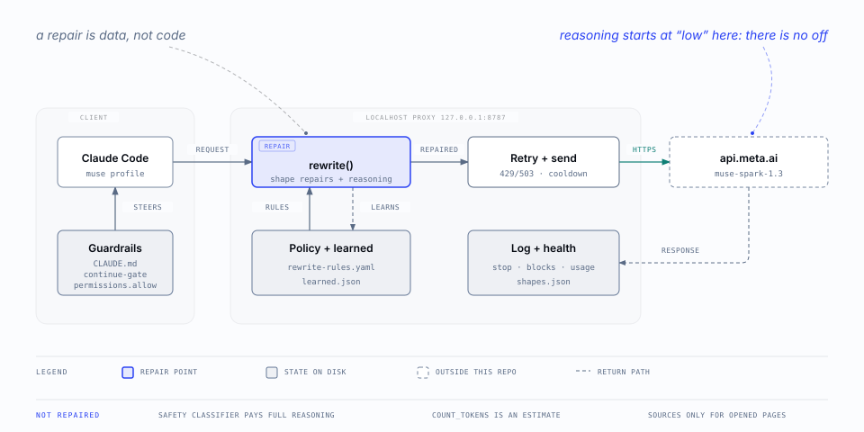
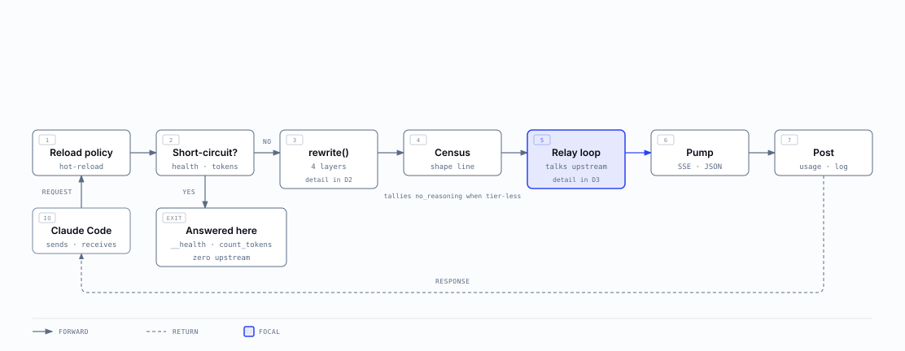
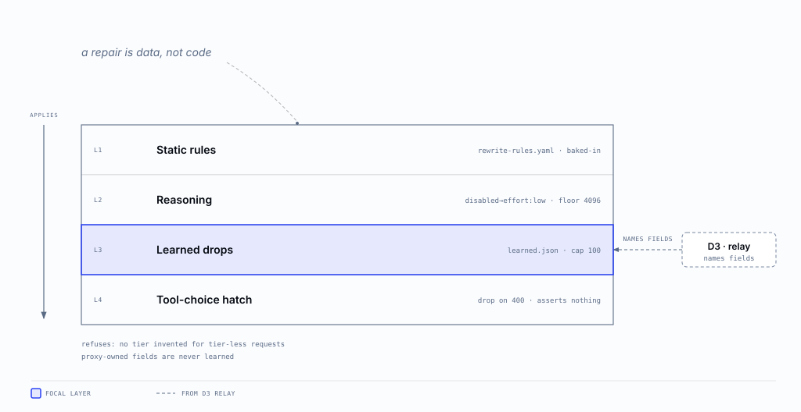
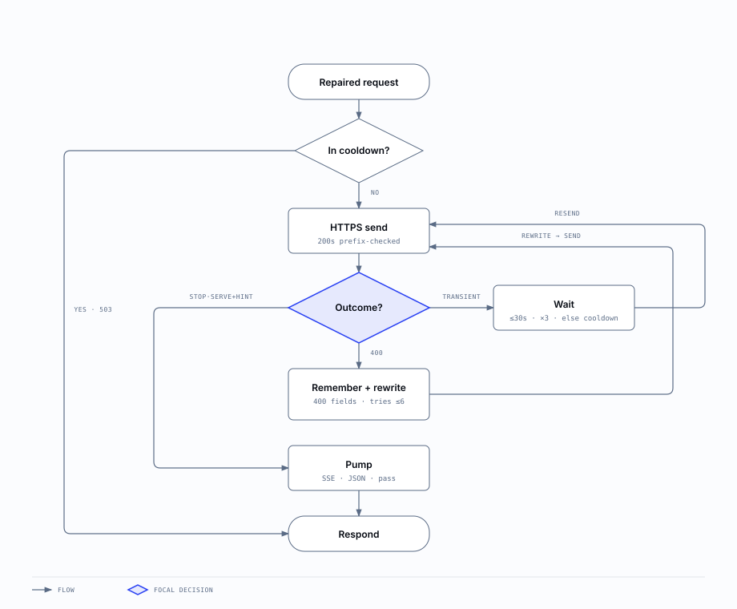

One localhost hop between Claude Code and muse-spark
Five diagrams, wide to narrow. Start at the top if you are new here; drop to the level that matches the question you are asking. Every figure states one claim, and every number on every figure matches the code it draws.
D0 · SYSTEM CONTEXTWhat the proxy is
One localhost hop repairs, retries, and records every request; responses return to Claude Code. Runtime state lives under ~/.config/claude-muse/, outside this repo.

D1 · REQUEST LIFECYCLEWhat one request passes through
Every request passes seven numbered stages; local paths answer without touching the network and only the relay loop talks upstream. Read this before you touch the engine.

D2 · REPAIR INTERNALSWhat rewrite() changes, in order
Repairs apply in four layers, data before code; the retry loop teaches layer three. The measured rules behind each layer are in the API subset.

D3 · RELAY AND RETRYWhat happens past rewrite()
Three failure classes, three treatments: wait and resend, learn and resend, or stop with a hint. Match each path to its log line when you debug a slow or failed request.

D4 · LAUNCH AND PROBEHow the proxy gets proven
A normal launch costs nothing; the first launch after an edit spends two calls proving it works. The launch rules behind this lane are in the design notes.